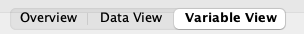

When working with a new dataset, you should first familiarize yourself with its variables and codings. Examples of this are given in Tasks 1 and 2. A graphical representation, as in the following exercises, can provide a substantive overview of the data.
Task 1
What is the level of measurement (scale type) for Gender/sex, Body Mass Index (BMI), and BMI categories?
First, answer this question based on your knowledge from the lecture, and then check whether the variables are correctly coded in SPSS.
To do this, switch from the Data View to the Variable View.⚙️

| Variable | (SPSS) Scale type | General type | Values |
|---|---|---|---|
| Gender | Nominal | Unordered categorical | Male, Female |
| BMI | Scale | Continous | |
| BMI categories | Nominal (?) | Ordered categorical | < 18.5, 18.5-25, 25-30 - \(\geq\) 30 |
- unordered vs ordered categorical?
- scale if you can, for example, meaningfully add, subtract, or average
How does the level of measurement (scale level) of the variable number of teeth differ from that of body height or BMI index?
| Variable | Nature | SPSS Measure | Comment |
|---|---|---|---|
| BMI | Continuous numeric | Scale | Can take decimal values |
| Number of teeth | Discrete numeric | Scale | Only integer values, but still numeric |
Task 2
How can the following variables be appropriately represented in a graph?: Gender, mean attachment loss, number of teeth.
Decide, before entering the data, whether to use a bar chart, histogram, or boxplot.
💡 In SPSS: Grafik → Diagrammerstellung